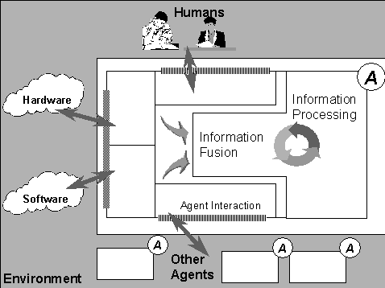
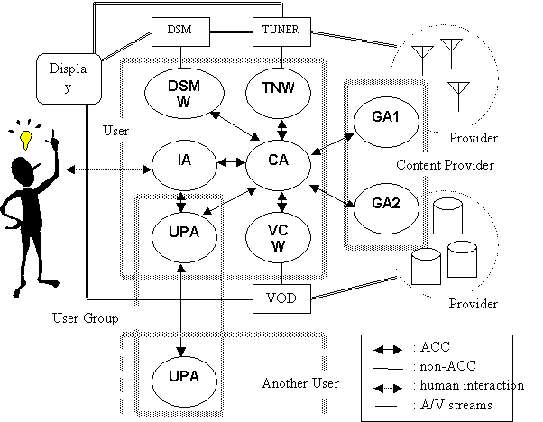
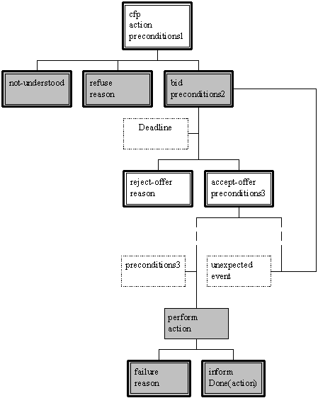

FOUNDATION FOR INTELLIGENT PHYSICAL AGENTS
FIPA
’97 Specification
Part 6
Audio/Video Entertainment and Broadcasting
Obsolete
© 1997 FIPA - Foundation for Intelligent Physical Agents
Geneva, Switzerland
|
Notice |
|
Use of the technologies described in this specification may infringe patents, copyrights or other intellectual property rights of FIPA Members and non-members. Nothing in this specification should be construed as granting permission to use any of the technologies described. Anyone planning to make use of technology covered by the intellectual property rights of others should first obtain permission from the holder(s) of the rights. FIPA strongly encourages anyone implementing any part of this specification to determine first whether part(s) sought to be implemented are covered by the intellectual property of others, and, if so, to obtain appropriate licences or other permission from the holder(s) of such intellectual property prior to implementation. This FIPA ’97 Specification is subject to change without notice. Neither FIPA nor any of its Members accept any responsibility whatsoever for damages or liability, direct or consequential, which may result from the use of this specification. |
1 Scope..................................................................................................................................................... 6
2 Normative References........................................................................................................................ 6
3 Definitions............................................................................................................................................. 6
4 Symbols and Abbreviations............................................................................................................... 7
5 General Analysis.................................................................................................................................. 8
5.1 A few Underlying Assumptions................................................................................................... 9
5.2 Required Functionalities and Capabilities................................................................................ 9
5.3 Actors, Roles and Domains......................................................................................................... 9
5.3.1 Agents...................................................................................................................................... 9
5.3.2 Resources and handlers..................................................................................................... 10
5.3.3 Domains................................................................................................................................. 10
5.4 Generic Model............................................................................................................................. 10
5.4.1 Detailed functions of agents............................................................................................... 10
5.4.2 Analysis of interactions:....................................................................................................... 12
5.5 Scenarios..................................................................................................................................... 15
5.5.1 Scenario 1............................................................................................................................. 15
5.5.2 Scenario 2............................................................................................................................. 16
5.5.3 Scenario 3............................................................................................................................. 16
5.5.4 Scenario 4............................................................................................................................. 16
6 Detailed Analysis............................................................................................................................... 17
6.1 User Profile.................................................................................................................................. 17
6.2 Agent Definitions......................................................................................................................... 19
6.3 Ontology....................................................................................................................................... 21
6.4 Interaction Protocol..................................................................................................................... 25
6.4.1 FIPA-AVEB-Request-Notification...................................................................................... 25
Foreword
The Foundation for Intelligent Physical Agents (FIPA) is a non-profit association registered in Geneva, Switzerland. FIPA’s purpose is to promote the success of emerging agent-based applications, services and equipment. This goal is pursued by making available in a timely manner, internationally agreed specifications that maximise interoperability across agent-based applications, services and equipment. This is realised through the open international collaboration of member organisations, which are companies and universities active in the agent field. FIPA intends to make the results of its activities available to all interested parties and to contribute the results of its activities to appropriate formal standards bodies.
This specification has been developed through direct involvement of the FIPA membership. The 35 corporate members of FIPA (October 1997) represent 12 countries from all over the world
Membership in FIPA is open to any corporation and individual firm, partnership, governmental body or international organisation without restriction. By joining FIPA each Member declares himself individually and collectively committed to open competition in the development of agent-based applications, services and equipment. Associate Member status is usually chosen by those entities who do want to be members of FIPA without using the right to influence the precise content of the specifications through voting.
The Members are not restricted in any way from designing, developing, marketing and/or procuring agent-based applications, services and equipment. Members are not bound to implement or use specific agent-based standards, recommendations and FIPA specifications by virtue of their participation in FIPA.
This specification is published as FIPA 97 ver. 1.0 after two previous versions have been subject to public comments following disclosure on the WWW. It has undergone intense review by members as well non-members. FIPA is now starting a validation phase by encouraging its members to carry out field trials that are based on this specification. During 1998 FIPA will publish FIPA 97 ver. 2.0 that will incorporate whatever adaptations will be deemed necessary to take into account the results of field trials.
Introduction
This FIPA 97 specification is the first output of the Foundation for Intelligent Physical Agents. It provides specification of basic agent technologies that can be integrated by agent systems developers to make complex systems with a high degree of interoperability.
FIPA specifies the interfaces of the different components in the environment with which an agent can interact, i.e. humans, other agents, non-agent software and the physical world. See figure below

FIPA produces two kinds of specification
normative specifications that mandate the external behaviour of an agent and ensure interoperability with other FIPA-specified subsystems;
informative specifications of applications for guidance to industry on the use of FIPA technologies.
The first set of specifications – called FIPA 97 – has seven parts:
three normative parts for basic agent technologies: agent management, agent communication language and agent/software integration
four informative application descriptions that provide examples of how the normative items can be applied: personal travel assistance, personal assistant, audio-visual entertainment and broadcasting and network management and provisioning.
Overall, the three FIPA 97 technologies allow:
the construction and management of an agent system composed of different agents, possibly built by different developers;
agents to communicate and interact with each other to achieve individual or common goals;
legacy software or new non-agent software systems to be used by agents.
A brief illustration of FIPA 97 specification is given below
Part 1 Agent Management
This part of FIPA 97 provides a normative framework within which FIPA compliant agents can exist, operate and be managed.
It defines an agent platform reference model containing such capabilities as white and yellow pages, message routing and life-cycle management. True to the FIPA approach, these capablities are themselves intelligent agents using formally sound communicative acts based on special message sets. An appropriate ontology and content language allows agents to discover each other’s capabilities.
Part 2 Agent Communication Language
The FIPA Agent Communication Language (ACL) is based on speech act theory: messages are actions, or communicative acts, as they are intended to perform some action by virtue of being sent. The specification consists of a set of message types and the description of their pragmatics, that is the effects on the mental attitudes of the sender and receiver agents. Every communicative act is described with both a narrative form and a formal semantics based on modal logic.
The specifications include guidance to users who are already familiar with KQML in order to facilitate migration to the FIPA ACL.
The specification also provides the normative description of a set of high-level interaction protocols, including requesting an action, contract net and several kinds of auctions etc.
Part 3 Agent/Software Integration
This part applies to any other non-agentised software with which agents need to “connect”. Such software includes legacy software, conventional database systems, middleware for all manners of interaction including hardware drivers. Because in most significant applications, non-agentised software may dominate software agents, part 3 provides important normative statements. It suggests ways by which Agents may connect to software via “wrappers” including specifications of the wrapper ontology and the software dynamic registration mechanism. For this purpose, an Agent Resource Broker (ARB) service is defined which allows advertisement of non-agent services in the agent domain and management of their use by other agents, such as negotiation of parameters (e.g. cost and priority), authentication and permission.
Part 4 - Personal Travel Assistance
The travel industry involves many components such as content providers, brokers, and personalization services, typically from many different companies. In applying agents to this industry, various implementations from various vendors must interoperate and dynamically discover each other as different services come and go. Agents operating on behalf of their users can provide assistance in the pre-trip planning phase, as well as during the on-trip execution phase. A system supporting these services is called a PTA (Personal Travel Agent).
In order to accomplish this assistance, the PTA interacts with the user and with other agents, representing the available travel services. The agent system is responsible for the configuration and delivery - at the right time, cost, Quality of Service, and appropriate security and privacy measures - of trip planning and guidance services. It provides examples of agent technologies for both the hard requirements of travel such as airline, hotel, and car arrangements as well as the soft added-value services according to personal profiles, e.g. interests in sports, theatre, or other attractions and events.
Part 5 - Personal Assistant
One central class of intelligent agents is that of a personal assistant (PA). It is a software agent that acts semi-autonomously for and on behalf of a user, modelling the interests of the user and providing services to the user or other people and PAs as and when required. These services include managing a user's diary, filtering and sorting e-mail, managing the user's activities, locating and delivering (multimedia) information, and planning entertainment and travel. It is like a secretary, it accomplishes routine support tasks to allow the user to concentrate on the real job, it is unobtrusive but ready when needed, rich in knowledge about user and work. Some of the services may be provided by other agents (e.g. the PTA) or systems, the Personal Assistant acts as an interface between the user and these systems.
In the FIPA'97 test application, a Personal Assistant offers the user a unified, intelligent interface to the management of his personal meeting schedule. The PA is capable of setting up meetings with several participants, possibly involving travel for some of them. In this way FIPA is opening up a road for adding interoperability and agent capabilities to the already established
Part 6 - Audio/Video Entertainment & Broadcasting
An effective means of information filtering and retrieval, in particular for digital broadcasting networks, is of great importance because the selection and/or storage of one’s favourite choice from plenty of programs on offer can be very impractical. The information should be provided in a customised manner, to better suit the user’s personal preferences and the human interaction with the system should be as simple and intuitive as possible. Key functionalities such as profiling, filtering, retrieving, and interfacing can be made more effective and reliable by the use of agent technologies.
Overall, the application provides to the user an intelligent interface with new and improved functionalities for the negotiation, filtering, and retrieval of audio-visual information. This set of functionalities can be achieved by collaboration between a user agent and content/service provider agent.
Part 7 - Network management & provisioning
Across the world, numerous service providers emerge that combine service elements from different network providers in order to provide a single service to the end customer. The ultimate goal of all parties involved is to find the best deals available in terms of Quality of Service and cost. Intelligent Agent technology is promising in the sense that it will facilitate automatic negotiation of appropriate deals and configuration of services at different levels.
Part 7 of FIPA 1997 utilizes agent technology to provide dynamic Virtual Private Network (VPN) services where a user wants to set up a multi-media connection with several other users.
The service is delivered to the end customer using co-operating and negotiating specialized agents. Three types of agents are used that represent the interests of the different parties involved:
The Personal Communications Agent (PCA) that represents the interests of the human users.
The Service Provider Agent (SPA) that represents the interests of the Service Provider.
The Network Provider Agent (NPA) that represents the interests of the Network Provider.
The service is established by the initiating user who requests the service from its PCA. The PCA negotiates in with available SPAs to obtain the best deal available. The SPA will in turn negotiate with the NPAs to obtain the optimal solution and to configure the service at network level. Both SPA and NPA communicate with underlying service- and network management systems to configure the underlying networks for the service.
Today more than ever, the need is perceived for effective means of information filtering and retrieval, in particular for digital broadcasting networks. The selection and storage of one’s favorite choice from the plenty of programs on offer can be very impractical. The information has to be provided in a customized manner, to better suit the user’s personal preferences. In order to implement the information filtering and retrieval, the semantic and syntactic content of the broadcast data streams need to be made compatible - therefore allowing a consistent method for selection. It is crucial that the human interaction with the system be as simple and intuitive as possible (“user friendly”). Key functionality such as profiling, filtering, retrieving, and interfacing can be made more effective and reliable by introducing agent technologies.
Foreseeable application fields are: TV, Radio and Data Broadcasting (for example, Weather forecasts, Stock Market prices), Electronic Newspaper, Commercial Database Services, Internet Services, Computer Aided Education (e.g., Distant Learning), Video- and Multimedia-on-Demand Service, Entertainment, Home Automation, and so on.
The present document describes the assessment of FIPA specifications (as reported in FIPA 97 ver 1.0 part 1 to 3) against a prototypical Audio/Video Broadcasting and Entertainment application.
The identified necessity for this application is as follows:
· Information Filtering and Retrieval
· Information Customization
· User Friendliness
· Home Automation - Education - Entertainment
· Information Compatibility
· Audio/Video Entertainment and Broadcasting: CFP1 (Tokyo)
· Agent Management: FIPA 97 ver 1.0 Part 1
· Agent-Agent and Agent-Human Interaction: FIPA 97 ver 1.0 Part 2
· Agent-Software Integration: FIPA 97 ver 1.0 Part 3
· Home System:
Hardware and software components of the whole system that are installed in the house of the users;
· Type 1:
Type 1 stream is an AV stream which is broadcast according to the pre-determined schedule. You might call it live stream or bit-stream. The typical Type 1 provider is a TV station.
· Type 2:
Type 2 stream is an AV stream which is delivered on-demand. You might call it stored stream or archived movie. The typical Type 2 provider is a VOD (Video on Demand) service provider.
· Content Description:
Content Description indicates metadata of the AV streams such as program titles, categories, start and end time, channel numbers(in case of Type 1), movie titles, directors, actors/actresses, and length of the movie (in case of Type 2).
· ACC (Agent Communication Channel)
· ARB (Agent Resource Broker)
· AV (Audio/Video)
· AVEB (Audio/Video Entertainment and Broadcasting)
· CA (Control Agent)
· DB (Database)
· DF (Directory Facilitator)
· DSM (Digital Storage Media)
· DSMW (DSM Wrapper)
· EPG (Electronic Program Guide)
· GA (Guide Agent)
· HS (Home System)
· IA (Interface Agent)
· TNW (Tuner Wrapper)
· UPA (User Profile Agent)
· UP (User Profile)
· VCW (Video-on-demand Controller Wrapper)
|  |
Fig. 1 Reference Model of the AVEB application
In this section the AVEB application is analyzed at the generic level (see Fig. 1), while several specific scenarios will be dealt with in Sec. 5.5.
The application being considered is a simplified one: a digital TV set equipped with a console and connected to a Digital Storage Media (DSM) is installed in a one-family house. Through the system (in the following, the Home System) the users (the members of the family) can access a variety of AV services (e.g. TV broadcast (Type1) and VOD server (Type2)), expressing their own preferences and making suitable selections.
Given this simple set-up, only one User Profile Agent (UPA) maintains information about all the users, and only one Control Agent (CA) manages the interaction with the broadcast services. Each user has his/her personal Interface Agent (IA). For each Home System an agent domain (the User Domain) is established which collects all agents and wrappers needed. Information pertaining to the profile of users can be exchanged among different Home Systems to get better recommendations from similar preferences through another domain (User Group Domain).
Type 1 / 2 Provider maintains content descriptions about available Type 1 / 2 streams. A Guide Agent (GA) watches these descriptions and informs CA of the required AV services. It also notifies the new services and/or the modification to CA automatically.
1. There exist content description providers for all contents.
2. The AV streams are transmitted through non-ACC channels.
3. There is some mechanism to login and logout the Home System.
4. In this version of the application specification, it is assumed that no user may move to another Home System.
5. In this version of specification, storage limits of DSM and prices of programs are not considered.
The following key functionalities and capabilities are identified as necessary for the application:
1. Building and maintaining the profile of user(s);
2. Filtering the incoming AV programs according to users’ profile information;
3. Autonomously querying and replying;
4. Controlling hardware (for example, DSM);
5. Being able to recognize/identify the user(s);
6. Being able to interact with the user(s) in a “multimodal” fashion;
7. Discovering users with similar preferences (inside and outside the User Domain) and sharing recommendations among them;
8. Protecting the Home System from misuse and abuse;
9. Featuring different classes of time-constrained behavior (i.e., real-time);
10. Negotiating queries and services (i.e. quality, cost, urgency) should be considered in the future version;
Four types of agents are identified:
1. Interface Agent (IA): Interacts directly with user via natural language dialogue, browser and other modalities; Interprets the user’s requests into agent communication language; Presents the information in a user-friendly manner.
2. User Profile Agent (UPA): Maintains (i.e., generates, modifies and controls) the user’s profile; Provides information on user’s preferences (with content regulation) for filtering and retrieval functions; Exchanges the preferences within User Group Domain.
3. Control Agent (CA): promotes interaction with other agents to accomplish the goal including getting user's interaction through IA, consulting user's preference to UPA, and collaborating with GA to search contents matching the user's preference; controls hardware devices through wrappers;
4. Guide Agent (GA): Maintains the list of AV programs, advertises its contents, answer queries from the control agent. It also collaborates with the CA for filtering the content list for the purpose of presenting to the user in a user-friendly and customized way.
Three types of resource handlers (wrapper agents) are identified:
1. Digital Storage Media Wrapper (DSMW): Interface for a DSM (e.g. read, write, make_directory).
2. Tuner Wrapper (TNW): Interface for a Tuner which controls Type 1 streams (e.g. get_metadata).
3. VOD Controller Wrapper (VCW) : Interface for a VOD Controller which controls Type 2 streams.
There are three types of domains (Refer to FIPA 97 ver 1.0 Part 1)for the AVEB application.
The following table provides the list of the domains and the agents/wrappers registered with them.
|
Domain |
Description |
Registered Agent |
Wrapper Agent |
|
User Domain |
An agent domain for presenting Audio/Video programs to users. Agents in this domain cooperate to retrieve/filter AV programs by users' requests or preferences using the index data attached to the programs. |
CA UPA IA(s) |
TNW DSMW(s) VCW(s) |
|
User Group Domain |
There may be good reasons to enable sharing of information pertaining to the profile of users across different systems. To do so, user groups may be established that are identified as domains(User Group Domains) containing the UPAs of participating users. |
UPAs |
|
|
Content Provider Domain |
An agent domain for providing the content descriptions of AV streams of all content providers. |
Type 1 GA Type 2 GA |
|
A UPA must register with a DF in a User Domain in order to communicate with IA(s) and CA. Also it must register with a DF in a User Group Domain in order to communicate with other UPAs.
IA
n translates the user request in ACL.
e.g., (simple query, composition of menu,) template-based natural language, search engine like Boolean logic + keywords, menu-based composition
n passes them to CA and receives answers from CA
n passes them to UPA, and receives answers from UPA
n translates ACL into the user language
n displays recommendations autonomously retrieved by CA
n receives from UPA user preferred interaction modalities and changes the mode accordingly
n senses the presence of user (e.g., initiates the dialogue when the user moves the mouse.), logs in/out.
CA
n contacts (several) GA’s to locate specific programs
n contacts GA’s to acquire unspecific program listing
n receives request from IA
n requests information about user characteristics to UPA
n receives user characteristics information from UPA
n presents to IA the selection of available programs
n formulates appropriate queries to UPA and GA
n engages in a collaborative dialog with GA for the purpose of refining the list of programs
n controls Digital Storage Media (DSM) via DSMW so that DSM can have access to the content.
n controls what is played on the tuner by relaying commands through the wrapper.
UPA
n receives user request (in ACL) from IA and analyzes it to update the user profile.
n sends information regarding the preferred way of presentation (or interaction) of the user (based on the user profile) to IA.
n
receives request from CA and
returns the proper information about user’s preferences typically.
UPA does not give the whole profile, but gives CA
user-related answers in collaborative/cooperating manner.
n manages (i.e., generates, modifies, and controls) the user profile database.
n requests other UPAs to inform about the other user’s characteristics.
n receives request from other UPA’s about the user characteristics (and returns it).
GA
n Gets requests from CA, returning the desired list of content(s).
n controls and monitors the creation/update of content index.
n When returning the answer to CA, it can engage in a collaborative dialog with CA for further restricting/refining the index
The interaction of components inside of the architecture (Fig. 1) is as follows:
1) UPA ó" IA:
· Description: the interaction is aimed at exchanging information relevant for user profiling.
(1) IA informs UPA which user logs in;
e.g. IA informs UPA that John logs in.
<IA, inform(UPA, login (John))>
(2) IA informs UPA of users selections and/or preferences;
e.g. IA informs UPA that John selects the program, Indiana Jones.
<IA, inform(UPA, select (John, Indiana-Jones))>
e.g. IA informs UPA that John likes Indiana Jones with preference score 0.4.
<IA, inform(UPA, prefer (John, Indiana-Jones, 0.4))>
e.g. IA informs UPA that John likes sport programs with preference score at least 0.4.
<IA, inform(UPA, forall prg (genre(prg) = Sport => prefer(John, prg, 0.4))>
(3) UPA informs IA of users preferred interaction modalities
e.g. IA asks UPA which modality John likes with preference score 1, then UPA replies that it is keyboard.
<IA, query-ref(UPA, iota x (modality(x) and prefer(John, x, 1))>
<UPA, inform(IA, iota x (modality(x) and prefer(John, x, 1)) = Keyboard)>
(4) IA informs UPA that the user has logged out;
e.g. IA informs UPA that John logs out.
<IA, disconfirm(UPA, login(John))>
2) UPA_1 ó UPA_2:
· Description: the interaction is aimed at sharing of users profile information across different Home Systems. UPA_1 and UPA_2 reside on different Home Systems (i.e., belong to different user domains).
(1) UPA_1 requests whether UPA_2 can make accessible a specific piece of information, P, concerning the profile of the users it serves;
<UPA_1, query-if(UPA_2, available(P, UPA_1))>
Notice: This cannot be expressed in the current FIPA ACL because P is a proposition which occurs as argument of a predicate. An approximation can be
<UPA_1, query-if(UPA_2, P)>
(2) UPA_2 informs UPA_1 about the accessibility of P;
<UPA_2, inform(UPA_1, available(P, UPA_1))>
Notice: Again, this cannot be expressed in the current FIPA ACL because P is a proposition which occurs as argument of a predicate. An approximation, which includes cases (3) and (4) below, can be
<UPA_2, inform-if(UPA_1, P)> (when P is available)
<UPA_2, refuse(UPA_1, inform-if(UPA_1, P), Not-Available)> (when P is not available)
(3) When accessibility of P is agreed upon, UPA_1 requests it;
(4) UPA_2 sends P to UPA_1;
3) UPA ó CA:
· Description: the interaction is aimed at informing CA about the users characteristics.
(1) CA requests information from UPA about characteristics of users;
e.g. CA asks UPA John’s date of birth and occupation.
<CA, query-ref(UPA, iota x birthdate(John)=x); query-ref(UPA, iota x occupation(John)=x)>
(2) UPA sends requested information to CA (if available and accessible: same scheme as in points 2)(2)-(4));
4) IA ó CA:
· Description: the interaction is aimed at delivering to CA the requests of the users.
(1) IA informs CA whenever the users log in and log out;
e.g. IA informs CA that John logs in.
<IA, inform(CA, login(John))>
(2) IA informs CA which are the current requests of the user;
e.g. IA informs CA that John wants to watch Indiana Jones.
<IA, inform(CA, like-to-watch(John, Indiana-Jones, Now)>
(3) CA sends to IA the information about available programs (as collected from the providers’ domains and the local DSM);
e.g. CA informs IA that Indiana Jones will be broadcast as TV program whose reference number are P1 and P2, and it is stored in VOD stream whose reference number is V1.
<CA, inform(IA, broadcast(Indiana-Jones, P1) and broadcast(Indiana-Jones, P2) and vod(Indiana-Jones, V1)>
5) CA ó TNW, VCW
· Description: CA controls Tuner (for Type 1 streams) and VOD Controller (for Type 2 streams) through TNW and VCW to initiate viewing. TNW and VCW translate the commands issued by an agent into hardware-dependent commands.
(1) CA issues a command to the devices through TNW and VCW;
e.g. CA issues to TNW of tuner 1 (already on channel 3) the command, “switch to channel 2”.
<CA, request(TNW, invoke(Tuner1, “switch to channel 2”))>
6) CA ó DSMW
· Description: CA controls DSM through DSMW to record the AV streams. It possibly controls DSM to playback the recorded contents corresponding to the users' requests, however, this functionality is an open issue in this version.
(1) CA issues a command to DSM through DSMW;
e.g. CA issues to DSMW of dsm 1 the command, “playback program p1”.
<CA, request(TNW, invoke(Dsm1, “playback program p1”))>
7) GA ó CA:
· Description: The interaction is aimed at getting the information about content descriptions.
(1) CA requests content descriptions from GA.
e.g. CA requests genre of program P1.
<CA, query-ref(GA, iota x genre(P1)=x)>
(2) GA replies the appropriate content descriptions corresponding to the requests.
e.g. GA replies that the genre of P1 is sport.
<GA, inform(CA, (iota x genre(P1)=x) = Sport)>
(3) GA autonomously informs CA of the modifications of the content descriptions (e.g. the TV program is postponed) and service categories (e.g. a new VOD provider starts the service).
e.g. GA informs CA that the program P1 is delayed from 9pm to 10pm.
<GA, disconfirm(CA, start_time(P1)=9pm); inform(CA, start_time(P1)=10pm)>
(4) CA and GA collaborate for better filtering.
e.g. CA informs GA that John watched Indiana Jones and rated it at 0.9.
<CA, inform(GA, rate(John, Indiana-Jones, 0.9))>
e.g. GA informs CA that average rating of Indiana Jones is 0.8.
<GA, inform(CA, average-rate(Indiana-Jones, 0.8))>
8) IA ó Human:
Description: the interaction allows the user to access the Home System (user recognition / authentication, log-in) and then to express his/her own preferences or requests.
(1)The user makes the Home System aware of his/her intention to access it;
(2) IA requests the user prove his/her identity;
(3) IA requests the user to enter profile information;
(4) IA informs the user of a suggested set of programs that is available;
(5) The user makes selections from given (possibly displayed) material. This may contain help or guidance for the user.
In this section, a variety of scenarios will be introduced in order to illustrate how the AVEB application works.
The Home System offers selected programs to a log-in user based on his/her preference. In this scenario, first a member of the family logs in the system. The system refers the maintained user profile that describes his/her preference, gender, age etc. Then it recommends to the user a set of programs to be viewed. As soon as the user selects one program, the IA informs the UPA of this choice in order it can appropriately update the user profile, if necessary. The interface agent asks the CA to retrieve the program by controlling devices through TNW, VCW or DSMW.
Initial situation:
The User Domain is established;
UPA and CA are initially active, while IA is initially suspended;
DF in the User Domain knows the DFs of provider’s domains.
When anewcomer registers to the User Domain:
An IA for the user is created and suspended.
A user profile for the user is created by UPA.
When a user logs in:
The user’s IA becomes active;
IA, UPA and CA start to communicate.
When IA recommends to the user a set of AV programs:
IA informs CA about user’s name;
CA asks the user’s profile from UPA;
CA retrieves candidate programs’ IDs from GA; CA then informs IA of the results;
IA asks the user’s profile from UPA; IA then sets a menu and shows it to the user.
When IA offers a selected program to the user:
IA informs UPA of the user’s choice;
IA asks CA to:
Control VOD controller to receive the Type 2 stream;
Control Tuner to filter the Type 1 stream as it begins;
Control DSM to store the AV stream.
When the user logs out:
The system stops the service;
The user’s IA becomes suspended.
The Home System automatically stores selected programs for a subscribed user, a member of the family. The CA evaluates an incoming content description from GA and consults UPA; if it matches the user preferences, the CA stores the program into the DSM.
Initial situation:
The User Domain is established;
UPA and CA are initially active, while IA is initially suspended;
DF in the User Domain knows the DFs of provider’s domain.
When a content provider delivers a new content description or modifies it,
GA detects the modification
GA informs CA of it;
When CA receives the new content description or the modification:
CA asks UPA whether the content well matches the user’s preferences;
If this is the case, CA makes a plan to get the content;
CA starts DSM to record the content when it starts.
In this scenario, when the user logs in, AVEB automatically makes a viewing plan appropriate to the user by consulting his/her user profile. The plan consists of a series of contents including those recorded in DSM.
When the user logs in:
IA informs CA that the user wants to make a planning
CA requires the content description of the recorded streams in DSM through DSMW as well as the content description from GA;
CA makes the viewing plan for the user.
After CA makes the plan:
CA controls DSM, VOD Controller, and Tuner through wrappers according to the plan.
The schedule of the program which the user plans to watch may be modified due to special news or overtime sport events. The modification should be notified to the CA. This interaction involves a certain protocol stated later.
When CA makes the plan according to Scenario 3 or the user directly asks CA to reserve programs:
CA requests GA to notify when the schedule of the program is modified.
GA registers the request.
GA keeps to watch the content description of the registered program.
When GA detects the modification:
GA informs CA of the modification.
CA checks whether the new schedule conflicts the plan.
CA determines whether it cancels or holds the program.
CA informs GA of the decision.
GA dismisses the registration if it cancels, or keeps watching if it holds.
When the program starts:
CA controls TNW or DSMW to view or record the program.
When the program finishes:
GA automatically discards the registration.
The purpose of the following analysis is to illustrate through a series of examples how the elements (user profile information, agents and ontologies) of the AVEB application can be instantiated.
The user profile is an essential source of information on the AV objects for selection and classification that are likely to be of interest to the user. The user profile has two parts; personal property and user preference. The personal property contains relatively static parameters describing about the user’s general and personal information such as user name, gender, habit etc. The user preference denotes dynamic properties of the user preferences or behaviour on the objects. Thus, values for those parameters in the user preference will change along with time by the learning process.
Personal property
|
Parameters |
Description |
|
:username |
Denotes user name. Format is “name/middle name/surname”. e.g., John/Stephen/Kenny |
|
:gender |
Denotes user’s gender. “m” indicates male and “f” female. |
|
:birthdate |
Denotes user’s birth date. Format is “yyyy/mm/dd”. e.g., 1960/07/02 |
|
:birthplace |
Denotes user’s birth place. Format is “place/country”. e.g. Kyoto/Japan |
|
:nationality |
Denotes user’s nationality. e.g. USA (or country code) |
|
:language |
Denotes user’s language competence in descending order. Format is “L1/L2/L3” e.g., Japanese/English/German |
|
:postal-location |
Denotes user’s geographical location in terms of postal address. Format is “number/city/country/postal code”. e.g., “1-1--11 Kinuta, Setagaya-ku/Tokyo/Japan/ 157”. |
|
:access-means |
Denotes user’s access means. The following labels should be used for specification of each type of access means: “tel:”, “fax:”, “email:”. e.g., tel:1111111111, email:xxx@yyy.kkkk.com. |
|
:occupation |
Denotes user’s professional activities. e.g. medical doctor |
|
:habit |
Denotes user’s habits. “:habit” denotes what user actually practices. Format is “habit1/habit2/...”e.g., smoking/drinking/painting. |
|
:interest |
Denotes user’s general interests. It denotes what user is interested in. Format is “interest1/interest2/...”. e.g., golf/basketball |
|
:payment-means |
Denotes user’s payment means. e.g., credit cards, etc |
|
:note |
This parameter is reserved for description of information on user’s personal property not covered by the parameters. |
User preference
|
Parameters |
Description |
|
interaction-modality |
Denotes user’s preferred interaction modalities in descending order of preference. |
|
FIPA-AV-OBJECT |
Denotes user’s preferences on FIPA-AV-OBJECTs. The degree of preference of each items in the objects are represented by using weight in terms of score varing from 0 to 1. |
Agents with different roles are normally required for a single application domain. Such a diversification of the agents is one of key features of distributed and decentralized computing. In this specification, four mandative agent types (interface, user profile, control, and guide) are defined. Agents are defined by using seven parameters with values. The values for the rest of the parameters have to be selected from the sets of pre-defined terms.
Interface-Agent (IA)
|
:agent name |
clapton.ia.homeserver1.kim@iiop://fipa.org:100/acc |
|
:agent type |
interface-agent |
|
:agent service |
user-interface user-access-control |
|
:interaction protocols |
user-agent-dialog(needed) fipa-request |
|
:ontology |
user-dialog-general user-dialog-movie-TV |
|
:address |
iiop://fipa.org:100/acc |
|
:ownership |
Kim |
User-Profile-Agent (UPA)
|
:agent name |
9876.upa.homeserver1.kim@ iiop://fipa.org:100/acc |
|
:agent type |
user-profile-agent |
|
:agent service |
user-profile-management program-scheduling |
|
:interaction protocols |
fipa-request fipa-contract-net |
|
:ontology |
user-profile-preference-movie-TV user-profile-personal |
|
:address |
iiop://fipa.org:100/acc |
|
:ownership |
Kim |
Control-Agent (CA)
|
:agent name |
cc8734.ca.homeserver1.kim@ iiop://fipa.org:100/acc |
|
:agent type |
control-agent |
|
:agent service |
DSM-location-access DSM-management event-notification movie-tv-retrieval |
|
:interaction protocols |
fipa-contract-net fipa-request |
|
:ontology |
|
|
:address |
iiop://fipa.org:100/acc |
|
:ownership |
Kim |
Guide-Agent (GA)
|
:agent name |
xyz.ga.provider1.NHK@ iiop://guide.com:200/acc |
|
:agent type |
guide-agent |
|
:agent service |
movie-TV-guidance event-notification |
|
:interaction protocols |
fipa-request |
|
:ontology |
user.dialog |
|
:address |
iiop://guide.com:200/acc |
|
:ownership |
NHK |
Audio-Visual Object Description
AV(Audio-visual) objects are media contents which are consumed by the AVEB applications. There are four basic types of AV objects; TV-Program, Movie, Music and Game. The tables below ("FIPA-TV-Program-Description", "FIPA-Movie-Description", "FIPA-Music-Description", "FIPA-Game-Description") show the parameters to describe the basic types of AV objects. The table named "FIPA-AV-Description" includes the parameters which can be inherited to the basic types.
FIPA-AV-Description
|
Parameter |
Description |
|
:object_id |
Identifies instance of the AV object. ex. :object_id 1234 |
|
:genre |
Denotes the genres of the content. LIST ex. :genre Sport, Documentary |
|
:language |
Denotes the languages representing the content. LIST ex. :language English, Japanese |
|
:title |
Denotes the title of the AV object. LIST ex. :title “Indiana Jones”, “INDII JONZU” |
|
:director |
Denotes the name of the director. ex. :director “Naoya Yoshida” |
|
:cast |
Denotes the names of casts. (e.g. actor, reporter, musician) LIST ex. :cast “Robert Johnson”, “Jimi Hendrix” |
|
:date |
Denotes the date of creation. ex. :date 1997/10/10 |
|
:keyword |
Represents the content. LIST ex. :keyword Soccer, Robot, AI |
|
:summary |
Summarizes the content by text. ex. :summary “This documentary introduces a life story of ...” |
|
:parential_rating |
FIPA-Parential-Rating LIST ex. : parential_rating (:country_code 81 :rating 1), (:country_code 1 :rating 3) |
|
:critical_rating |
FIPA-Critical-Rating LIST ex. : critical_rating (:critic_name “Tom Key” :rating 5), (:critic_name “Mary Clapton” :rating 1) |
|
:provider |
Denotes the provider of the AV object. ex. :provider NHK |
|
:cost |
Denotes the cost to get the AV object. ex. :cost 100USD |
FIPA-Parential-Rating
|
Parameter |
Description |
|
:country_code |
Denotes the country in which the rating is valid. |
|
:rating |
Denotes the rating value for viewing regulation. |
FIPA-Critical-Rating
|
Parameter |
Description |
|
:critic_name |
Denotes the name of a critic who estimates the content. |
|
:rating |
Denotes the rating value for the content. |
FIPA-TV-Program-Description
|
Parameter |
Description |
|
:av_description |
FIPA-AV-Description ex. :av_description (:object_id 1234 :genre Sport ...) |
|
:start_time |
Denotes the starting time of the program. ex. :start_time 1997/09/11.13.00.00 |
|
:duration |
Denotes the duration of the program. ex. :duration 1h30m00s |
|
:running_status |
Denotes the status of the program; running on or not. ex. :running_status OFF |
|
:scramble |
Denotes the program is scrambled or not. ex. :scramble ON |
|
:bit_rate |
Denotes the bit-rate of transmission. ex. :bit_rate 5MBPS |
|
:coding_scheme |
Denotes the coding scheme of transmission. ex. :coding_scheme MPEG-2 |
FIPA-Movie-Description
|
Parameter |
Description |
|
:av_description |
FIPA-AV-Description ex. :av_description (:object_id 1234 :genre Comedy ...) |
|
:duration |
Denotes the duration of the program. ex. :duration 1h30m00s |
|
:scramble |
Denotes the program is scrambled or not. ex. :scramble ON |
|
:bit_rate |
Denotes the bit-rate of transmission. ex. :bit_rate 5MBPS |
|
:coding_scheme |
Denotes the coding scheme of transmission. ex. :coding_scheme MPEG-2 |
FIPA-Music-Description
|
Parameter |
Description |
|
:av_description |
FIPA-AV-Description ex. :av_description (:object_id 1234 :genre Rock ...) |
|
:composer |
Denotes the name of the composer. LIST ex. :composer “John Lennon” |
|
:duration |
Denotes the duration of the program. ex. :duration 1h30m00s |
|
:bit_rate |
Denotes the bit-rate of transmission. ex. :bit_rate 2MBPS |
|
:coding_scheme |
Denotes the coding scheme of transmission. ex. :coding_scheme MPEG-2-AUDIO |
FIPA-Game-Description
|
Parameter |
Description |
|
:av_description |
FIPA-AV-Description ex. :av_description (:object_id 1234 :genre Sport ...) |
|
:game_machine |
Denotes the name of the machine that the game can be played. LIST ex. :game_machine NITENDO-64 |
|
:operation_device |
Denotes the devices that needed to play. LIST ex. :operation_device Joy-Stick, HMD |
This protocol is used between CA and GA to get the notification of the modification about the specified program as described in Scenario 4. This protocol automatically terminates after the program's ending time.
It could be done by a new proposed protocol FIPA-Reactive-Contract-Net, which is obtained by slightly modifying FIPA-Contractnet-Protocol.

FIPA-Reactive-Contract-Net